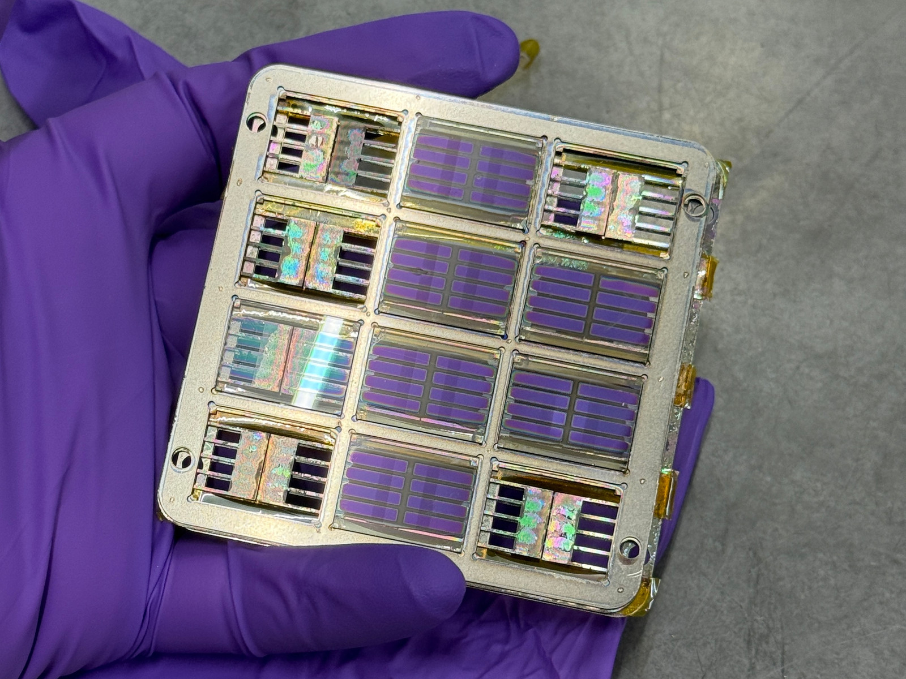
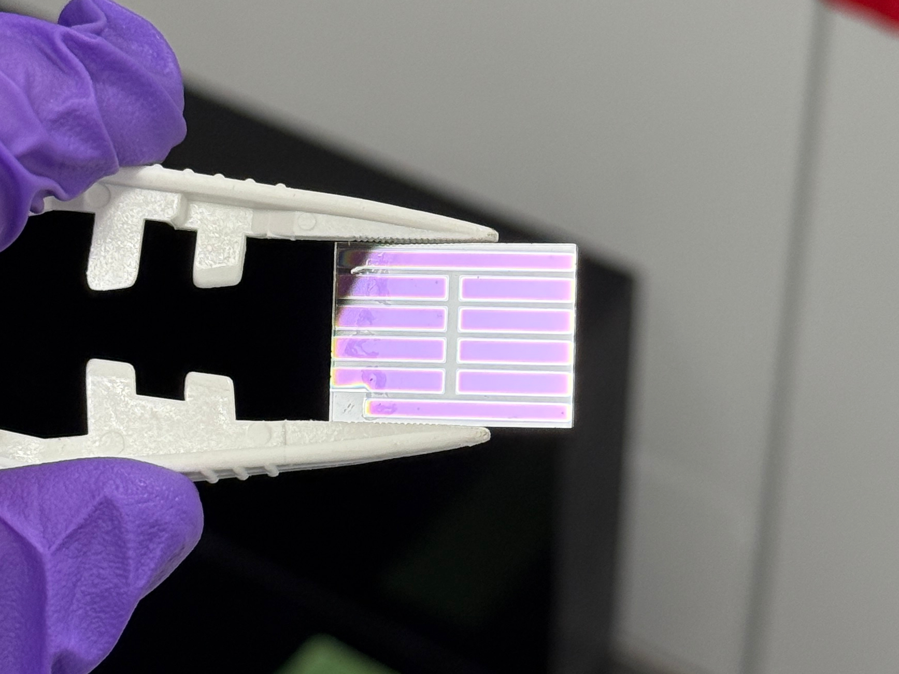
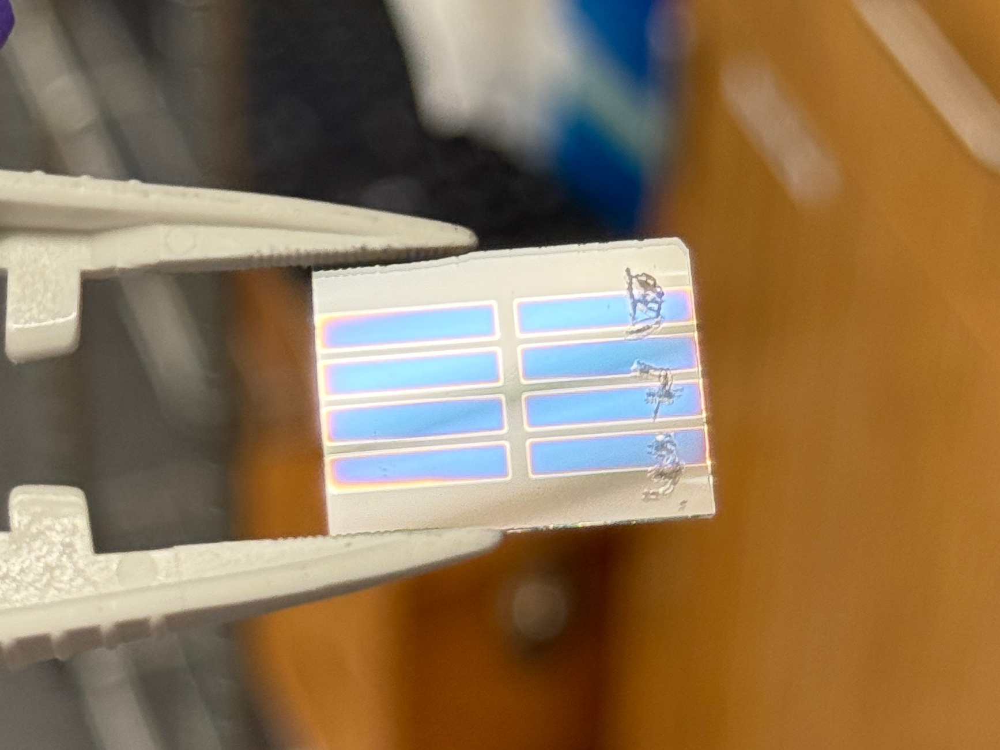

Boosting Perovskite Solar Cell Efficiency Through Triplet-Triplet Annihilation Upconversion
A material can only absorb light with energy larger than its bandgap, and that material will be essentially transparent to most of the light below that energy. In the context of solar cells, this means that a very significant amount of light being emitted by the Sun is not being absorbed and turned into usable power.
This is where upconversion comes in. The idea is to put a layer behind the cell that takes two low-energy, sub-bandgap photons and combines their energy into one higher-energy photon that the perovskite can absorb. So instead of losing that infrared, you can convert and absorb part of it.
The problem is the silver at the bottom of our cell, and, as we all know, silver is reflective and opaque. This applies to the sub-bandgap photons as well. These low-energy photons would pass straight through our perovskite, but instead of going to the upconversion layer at the back, they're being blocked by the silver.
This motivates us to make solar cells with a transparent contact, and hence, the semitransparent perovskite solar cell. But another problem exists here: to deposit this transparent conductive oxide (TCO) to serve as our contact, we have to use a physical vapor deposition method called sputtering. This is a very energetic process that can damage the underlying solar cell layers, which prompts us to add in a buffer to protect our cells from sputtering damage. However, these layers can add electrical resistance to the cell, significantly impeding the performance of our cell.
My task is to:
- Find the optimal material and thickness for this buffer layer, such that it is thin enough to not add significant series resistance, but at the same time is able to protect the underlying layers from sputter damage.
- Optimize the sputtering recipe to ensure both material transparency and electrical conductivity.
Opaque baseline — champion 18.9% PCE
- Agback contact and reflector
- BCPbuffer layer
- C60electron transport layer
- Perovskiteabsorber
- 2PACzhole transport layer
- ITOfront electrode (pre-patterned)
- Glasssubstrate
Semitransparent — best 13.9% PCE
- Agedge contact
- IZOtransparent back electrode
- BCPbuffer layer
- C60electron transport layer
- Perovskiteabsorber
- 2PACzhole transport layer
- ITOfront electrode (pre-patterned)
- Glasssubstrate
Both opaque and semitransparent devices have silver as the final electrical contact. The difference is that silver is only deposited on the edges of the substrate, instead of covering the active area (and serving as the back reflector) in the opaque devices.
What I did
Fabricated 120+ substrates and characterized their performance. This process involves glovebox spin coating (2PACz, perovskite), thermal evaporation (C60, buffer layers, silver) and sputtering (IZO and ITO). I then used a solar simulator to characterize electrical performance, profilometry to check film thicknesses, photoluminescence to look for PL quenching, and UV-Vis to see the transparency of individual films and the whole stack.
What came out of it
- Working semitransparent perovskite solar cells!
- A two-step soft-sputter recipe, with a 37 W seed layer, then 100 W for the bulk layer, deposited directly onto the BCP. This recipe cut median series resistance 4× and raised shunt resistance 2.7×, taking the best device from 10.6% to 13.9% PCE at over 80% transmittance beyond 750 nm.
- A root-cause failure analysis of a batch that came out shunted. This traced the yield limiter to evaporation-mask step coverage; a masking split then gave 8/8 working devices against 4/8 without.
- A full-factorial DOE crossing C60 (5–25 nm) and Sb2O3 (5–15 nm) thickness. The best stack in the tested range was 25/5 nm. Furthermore, I tested various thicknesses for SnO2 and BCP as other candidates for the buffer layer.

A device batch straight out of the sputterer, still in the holder. The purple panes are semitransparent devices, alongside a bare glass substrate to check by profilometry that the sputtering recipe reached the desired thickness.
These devices will then undergo the final step of the fabrication process, where silver contacts are thermally evaporated, but leaving the active area masked such that they can be transparent to sub-bandgap photons.


Sputtered IZO on bare glass, patterned through a shadow mask. This is the only way we are able to confidently know how much IZO has been sputtered onto our devices.
Poster
Fabrication and Optimization of Semitransparent Perovskite Solar Cells for Upconversion Integration — Tung D. Nguyen, Tyler K. Colenbrander, Daniel N. Congreve. Presented at the Stanford EE REU symposium, 2026.